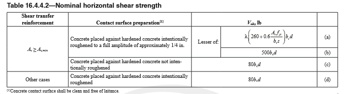
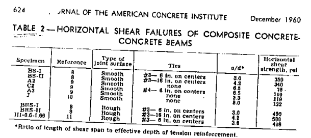
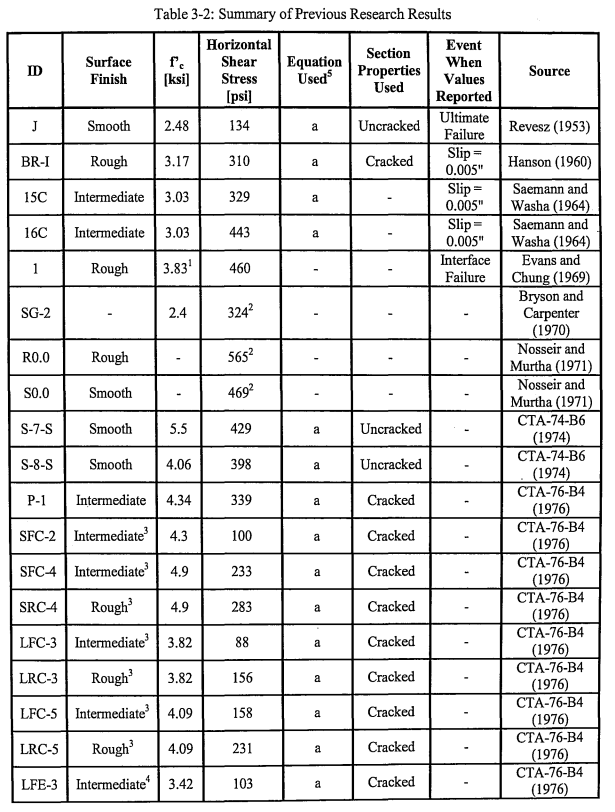
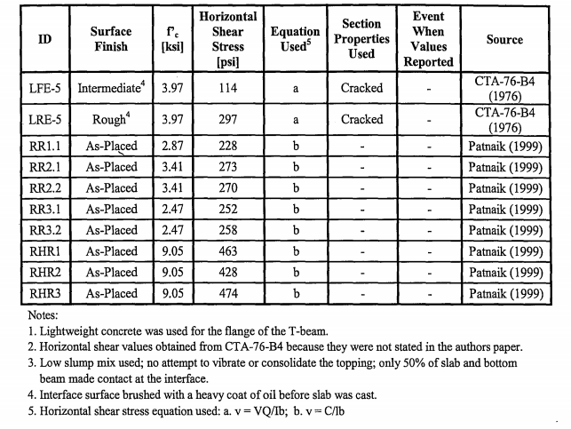
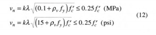
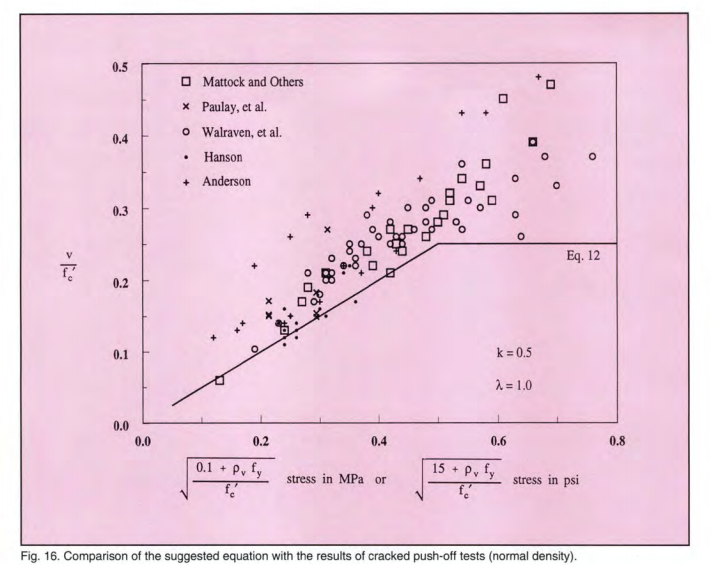
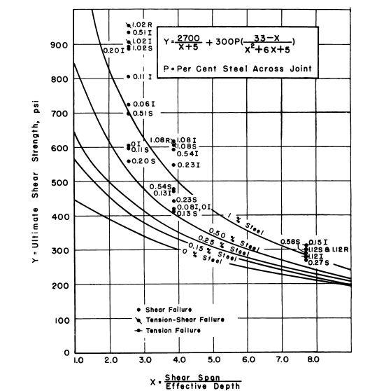

It’s often infeasible to construct large concrete structural elements in a single pour of concrete. In such cases, these elements are often constructed in a way that leaves a horizontal joint through the concrete. Typical examples would be field-topped precast hollowcore planks, or shallow foundations where the slab is poured after the grade beams.
If we wish to take advantage of the full depth of these elements by using composite action, this joint must be designed to transfer horizontal shear across it. The provisions for calculating concrete horizontal shear capacity are given in ACI 318-19 Table 16.4.4.2:

The code gives a severe penalty to concrete without shear reinforcing crossing the joint. For unreinforced joints, roughening the surface to 1/4" amplitude is required, and the capacity is limited to 80 psi.
Roughening a concrete surface to 1/4" amplitude and installing shear reinforcing are labor-intensive, time consuming and costly. So it’s useful to examine the source of these provisions, in particular the 80 psi capacity for an unreinforced joint.
The 80 psi value for an unreinforced horizontal joint first appears in the code in ACI 318-71. According to the commentary in ACI 318, the horizontal shear provisions are based on a series of experiments performed in the early 60’s: Kaar et al (1960), Seamann and Washa (1964), and Hanson (1960). However, none of these publications reference a capacity of 80 psi[1]. So where does this value come from?
Digging back further, we find the earliest mention of 80 psi in relation to horizontal shear strength appears in ACI-ASCE Committee 333 (1960). This publication summarized tests done on 78 concrete beams, 9 of which failed in horizontal shear:

The 80 psi value appears in the report as the shear capacity of a smooth concrete surface:
In view of the evidence discussed briefly in the preceding paragraph the committee considered it advisable at this time to base the recommended bond values for smooth surfaces on the strength of 80 psi, and for rough surfaces on the strength of 400 psi. The factor of safety for beams beams designed according to these recommendations ranges from 2.0 up. In view of the uncertainty concerning the bond strength in the range of larger a/d values, a factor of safety of 2.5 was used to obtain allowable bond stresses (Section 205.2.1) for the rough surfaces. For smooth surfaces, better covered by the available test information, a factor of safety of 2.0 was selected.
Of the 9 beams which failed in horizontal shear, only 3 had unreinforced joints, none of which had roughened surfaces. As such, the committee deliberately abstined from making a recommendation for unreinforced joints:
The committee strongly recommends the use of steel ties crossing the contact area in all composite concrete T-beams. For light concrete joists and for slabs with precast beams completely embedded on three sides, this recommendation may be too severe. The committee considered such construction outside the scope of the tentative recommendations.
Despite these recommendations, and the lack of relevant test data, the 80 psi value from this publication was incorporated into ACI 318-71 as the recommended value for both smooth reinforced joints, and rough unreinforced joints. We can find this discussed in Concrete Technology Associates (1974)*:
The 1971 ACI Code refers to tests by Seamann and Washa, Hanson, Mattock and Kaar, and Krossfield and Brinstiel, as the basis for the requirements on horizontal shear. In all the above references, only three speciments without steel ties were tested to failure, and these achieved 350 psi (Hanson), 420 psi and 606 psi (Saemann and Washa) of horizontal shear, respectively. It must be concluded that the present-day allowance of 80 psi for an intentionally roughened contact surface without ties derives from the report of Committee 333 discussed above.
Despite the lack of empirical support, the 80 psi capacity of a roughened unreinforced concrete joint has remained as the code-defined value in ACI 318 for nearly 50 years.
So if the value of 80 psi has no empirical basis, what is the actual capacity of an unreinforced horizontal concrete joint?
Much of the research in this area is summarized in Kovach (2008), shown in the table below:


The experiments tabulated vary in concrete strength, surface finish, and general testing conditions, resulting in a wide spread of unreinforced horizonal shear strengths. However, we can see the majority of the tests failed at several hundred psi, significantly above the current code value of 80 psi. For the tests which show lower capacities, we can see that the surface was either smooth or a bond was otherwise deliberately prevented from forming.
Another comprehensive study of horizontal shear capacity was performed by Loov and Pataik (1994). Running their own series of tests, and combining their results with those of 5 previous studies, they approximate the horizontal shear capacity of an unreinforced concrete joint with the following equation:

Where k is 0.5 for joints, and 0.6 for monolithic pours. This equation provides a reasonable lower bound of capacity:

Using the Loov and Pataik equation, along with the recommended k value of 0.5 for an unreinforced joint, we find that for 4000 psi concrete we get a capacity of 122 psi[2], over 50% greater than the capacity currently prescribed by ACI 318.
Loov and Pataik also note that deliberately roughening the surface appears to be unnecessary, and that an as-cast surface is sufficient to develop bond between pours if the rough aggregate is left exposed:
Because an as-cast concrete surface with coarse aggregate left protruding from the surface can develop sufficient horizontal shear resistance, more elaborate finishing is not required.
However, they do caution that surface roughness has a significant impact on the horizontal capacity achieved, and that a cautious approach is warranted. This can also be seen in the results summarized by Kovach, where different experimental setups resulted in significantly different horizontal shear strengths.
The current provisions for unreinforced horizontal shear strength in ACI 318 have little empirical backing, and fail to accurately predict the capacity of these joints. More recent work summarizing the relevant studies in this area suggests that the current code significantly underestimates the capacity of these joints, and that a more accurate design equation would yield significantly higher capacities.
- The girder and push-off tests reported herein indicate a maximum shearing stress for composite action of 500 psi for a rough bonded surface and 300 psi for a smooth bonded surface. The compressive strengths of the concretes were 3000 and 5000 psi for the slab and girder, respectively.
And Saemann and Washa (1964) give an equation based on % steel, shear span, and effective depth, with unreinforced joint capacity ranging from 450psi to 200psi:
